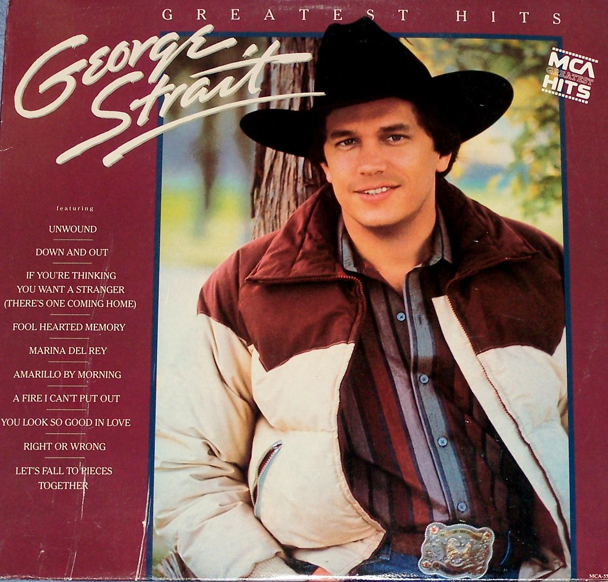
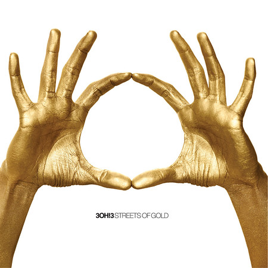
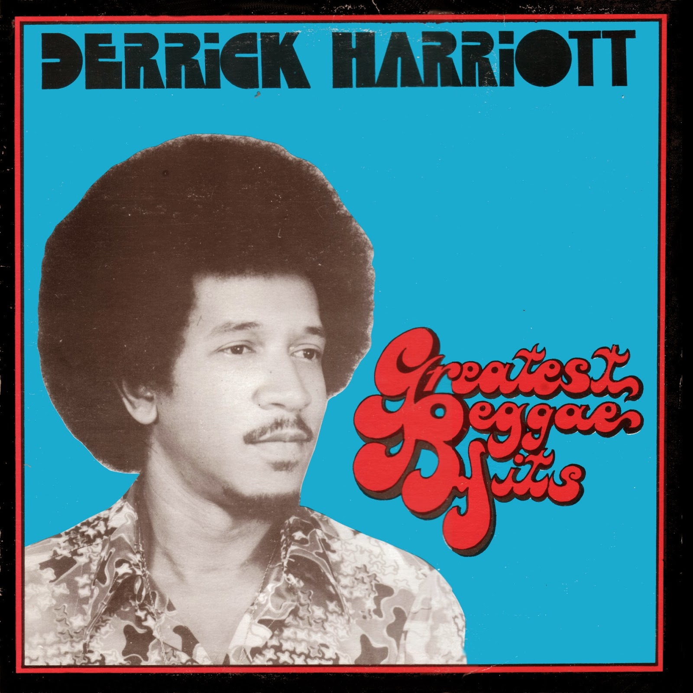
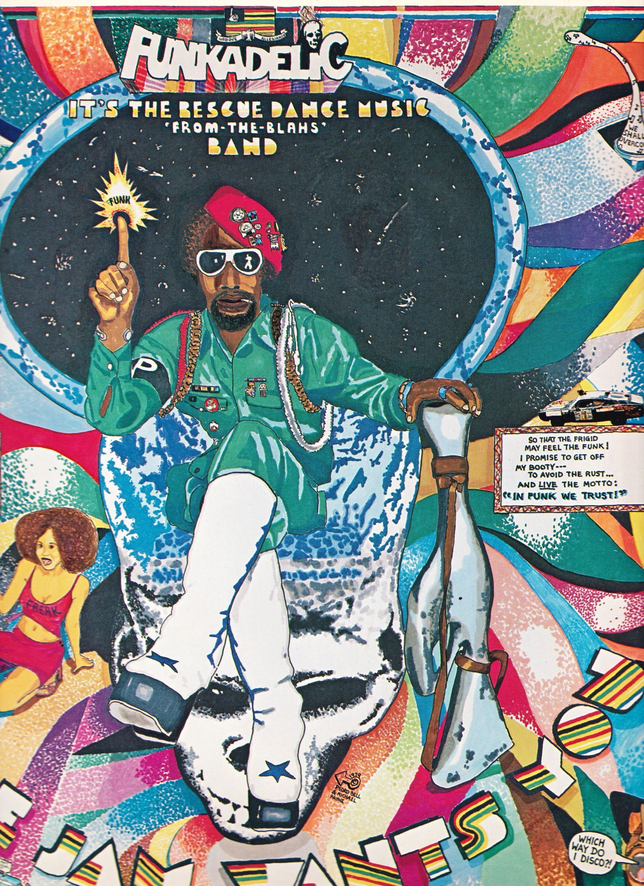
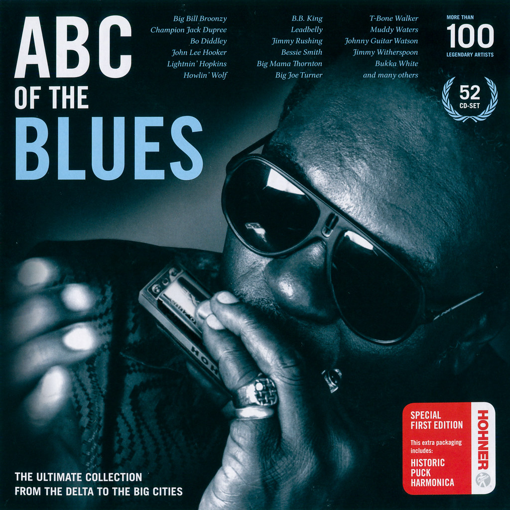
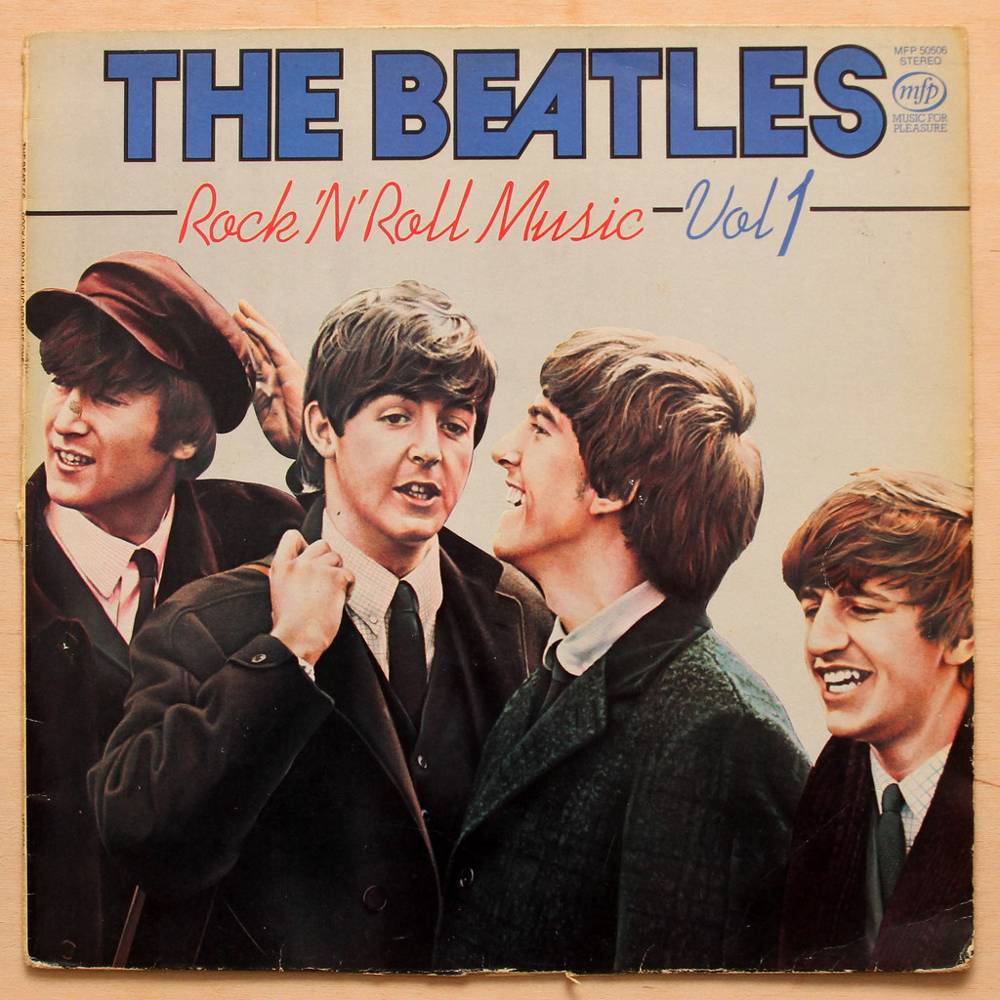
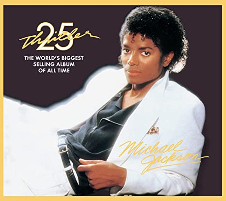

Country is one of the world's top music genres of all time.But in my opinion it lacks in comparision to other genres and just doesn't sound as good
Classical music is amongst the oldest genres of all time.But honestly feels way too outdated and almost sucks in some songs
Raggae is a genre orginated in jamica.The genre is usually played on guitars bass and drums.It is a solid genre and is placed at a solid spot
 >Funk is amazing compared to the other three it has a strong rythemic pulse prominent bas lines and just amazing overall it was hard putting it this low
Blues is a genre orginated in the united states.Its a really amazing genre with strong word orgins and nice folk music
Rock is a broad genre of music orginated as rock and roll.It is incredibly popular and sounds great with its electic guitar, bass guitar, drums,keyboards and use of piano.
A style of music that was used in the united states and united kingdon during the mid 50s.Its an insanely great genre with alot of iconic music like micheal jackson and many more iconic artist
Hiphop also known as rap music is an incredibly great style that sounds good to the ears and is amazing with the right lyrics.